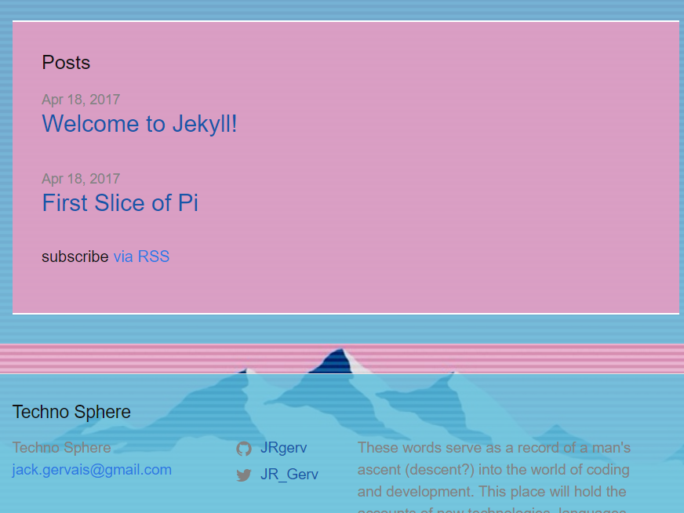

< P O R T F O L I O >

Techno-sphereclose
Ruby on rails web log I built as a personal headspace and canvas for passion projects. First post showcases the build and set-up process for a Raspberry Pi micro-computer. Site utilizes MaterializeCSS for styling, Discus comments section, and Google page analytics.

Safety Pinclose
Safety Pin in a data-mapping applicaiton built from React and designed with safety in mind. It projects crime data from the Seattle Police Dept. API to a map of the city, allowing users to pinpoint and avoid potential danger.